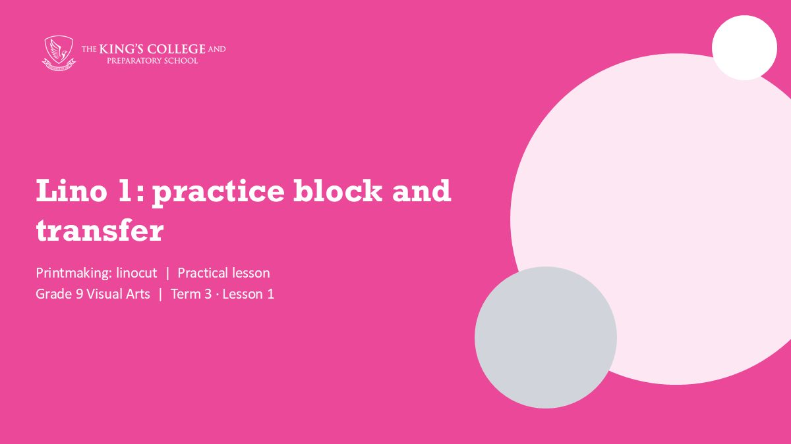

Term 3 · Lesson 1 · Practical lesson
Lino 1: practice block and transfer
Start here
Today I will
- Cut safely with a bench hook and gouges
- Make V-gouge and U-gouge marks on a practice block
- Transfer my reversed design to the main block
Think first
Lino gouges are sharp enough to cut skin. What rules would you make to keep everyone safe?
Words to know
- Bench hook
- A board with a lip at each end: one hooks over the table, the block pushes against the other so it cannot slip.
- V-gouge
- A V-shaped blade for fine lines, details and outlines.
- U-gouge
- A rounded blade for clearing larger areas and soft lines.
- Transfer
- Moving your design onto the block so you can cut it.
- Reversed image
- The design on the block is a mirror image of the final print.
Slides

Notes
Cutting safely (bench hook, cutting away from the body, hand behind the blade); V-gouge and U-gouge marks on a small practice block; transferring the reversed design to the main block.
Blade safety: the non-negotiables
- Always use the bench hook: The block sits against the lip so it cannot slide.
- Cut away from your body: Push the gouge forward, never towards yourself.
- Hand behind the blade: Your holding hand stays behind the cutting edge at all times.
- Turn the block, not your hand: Rotate the block for curves so you keep cutting away from you.
- Carry and store safely: Blade pointing down; tools back in the box; report any cut at once.
Two ways to transfer the design
| Tracing-paper method | Carbon-paper method |
|---|---|
| Go over the tracing in soft pencil. | Flip the design over and trace it onto the back so it is reversed. |
| Place it pencil side down on the block. | Put carbon paper under it, ink side on the lino. |
| Rub firmly on the back with a spoon. | Draw over the reversed lines firmly. |
| The design is reversed automatically. | Check that words read backwards. |
Remember
Bench hook on, blade away, hand behind.
Practical
You need: Practice block, main lino block, V- and U-gouges, bench hook, tracing or carbon paper, soft pencil, marker
Practice block, then transfer
- Place the practice block on the bench hook against the far lip.
- Cut three straight V-gouge lines, then three curves (turn the block).
- Clear a small area with the U-gouge; try dots, dashes and cross-hatching cuts.
- Transfer your design onto the main block using the tracing-paper or carbon-paper method.
- Check that the image is reversed and any words read backwards.
- Go over the lines with marker and fill in the areas that will stay black.
Test yourself
- Name the three main safety rules for cutting lino.
- Which gouge is used for fine lines?
- Why must the design be reversed on the block?
Show answers
1. Use the bench hook, cut away from your body and keep your hand behind the blade. 2. The V-gouge. 3. Printing makes a mirror image, so the block must be reversed for the print to face the right way.
Finished early?
Mark-maker plan
Plan which gouge cuts you will use where.
- In your VJ, draw four small squares.
- In each, draw the cut marks you could make: straight V-gouge lines, curved V-gouge lines, U-gouge clearing and dots or dashes.
- Label each with the gouge you would use.
- On a quick sketch of your design, mark where each kind of cut will go.